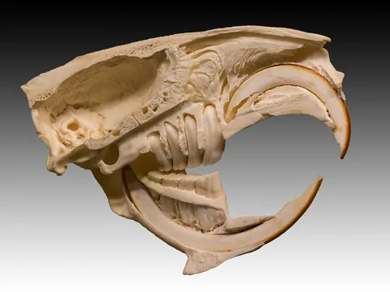
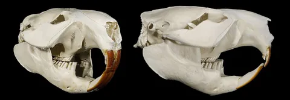
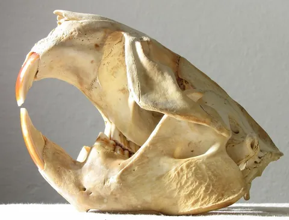

標本と研究に照らして、どこまで分かるか
輪郭の根拠
James St. John撮影、Ohio State University Museum of Zoologyのアメリカビーバー頭蓋。右側面写真の可視輪郭を、縦横比を変えずに1000単位幅へ換算し、手作業でベジェ曲線にしました。骨の表面線は主要な縫合・稜線のみを選択しています。
写真は正投影やCT断面ではなく、左右の骨・歯が重なります。下顎の上部は頬骨弓に隠れており、MVZ 80744の分離下顎写真も参照して補いました。個体間の形状差を含み、標本の完全な計測復元ではありません。追加提供のMHNT・SF Bay標本も下顎角と頬骨弓の形態照合に使用しています。
| 表示 | 根拠・制約 |
|---|---|
| 頭蓋背側線・頬骨弓・下顎腹側縁 | 主標本写真からの可視輪郭 |
| 下顎頭・筋突起の隠れた縁 | 別標本も参照した補間。破線で区別 |
| 埋設切歯の弧 | 提供された縦断写真を形態参照。個体への位置合わせと太さは推定 |
| 関節の溝・咬筋ベクトル | 位置関係の説明図。軟骨形状・張力は未測定 |
運動の根拠
Cox & Baverstock（2016）はC. canadensisの解剖とCTを用い、切歯咬合位と30°開口位を比較しています。開口は関節軸まわりの回転として計算されており、35°が生体の最大値であることや、角度に比例する大きな滑走を示した研究ではありません。
Stefen, Ibe & Fischer（2011）の二方向X線観察はC. fiberの亜成体1頭が対象。切歯作業での上後方への閉口、咀嚼時の前方・左右の動きを参照しました。C. canadensisの太い生木を切る実測軌道と同一視していません。
咀嚼の3〜5°は表示上の浅い開閉範囲です。実際の臼歯接触には、ここで扱わない左右の位置や傾きも関わります。上下の臼歯が側面で重なって見えても、三次元の接触を保証しません。
読み取り方
かじりの0°は切歯先端を近づけた説明用基準です（撮影姿勢から下顎を6°回転し前方に20単位移動）。咀嚼は臼歯の作業姿勢に別途合わせ、表示3°で撮影時の角度・上方6単位の位置になります。2モードの角度基準は異なり、そのまま比較できません。滑走0%は各基準からの追加変位なし。切歯距離は二点間の側面投影距離を図の頭蓋長960単位で割った値です。橙の接触点は木の投影領域に入った場合だけ点灯します。
追加提供の4資料との照合

CC BY-SA 4.0 · 縮小のみ

CC BY-SA 4.0 · 縮小のみ

CC BY-SA 3.0 · 縮小のみ
各写真は独立した参照資料です。個体差・撮影方向・標本の組み付けを区別し、一つの実測標本として混合していません。埋設部のSVGは断面形態をもとに再構成した説明図で、主標本のCTトレースではありません。
出典・ライセンス・アプリへの組み込み
参照資料
- 標本写真：Castor canadensis skull 2
James St. John, 2019. CC BY 2.0。写真を縮小して内蔵。SVG輪郭は同写真をもとに翻案。撮影者・所蔵機関による監修ではありません。 - Cox & Baverstock (2016), Masticatory muscle anatomy and feeding efficiency…
著者稿と掲載情報。咬筋の付着位置・大開口時の力学の根拠。 - Stefen et al. (2011), Biplanar X-ray motion analysis…
C. fiberの運動観察。種と採食条件が異なります。 - Palaeontologia Electronica (2023), Fossil Beaver Morphology — Figures 2, 15
C. canadensis MVZ 80744の分離下顎を比較参照。図版の転載はしていません。
1ファイルで動作
外部ライブラリ・フォント・通信は不要です。標本写真もHTML内に含みます。配布時には写真と翻案輪郭のクレジットを残してください。骨格図の翻案部分はCC BY-SA 4.0で提供します。各写真のライセンスは別記のとおりです。
?embed=1 をURL末尾に付けると、透過背景の図だけを表示します。同一オリジンのiframe内なら iframe.contentWindow.BeaverJaw から操作できます。
BeaverJaw.setState({mode:'gnaw', gape:30, shift:5})BeaverJaw.play() / BeaverJaw.pause()BeaverJaw.getState()BeaverJaw.setLayers({labels:false, vectors:true, internal:true, log:false, joint:false, angle:false})
SVGの可動部分は #jaw、上顎を含む固定部は #cranium。全体の更新時に beaverjawchange イベントを発行します。埋設切歯と下顎臼歯も下顎と一緒に移動します。
SVG保存は静止画です。標本照合中は内蔵写真も含み、クレジットはmetadataに保持します。